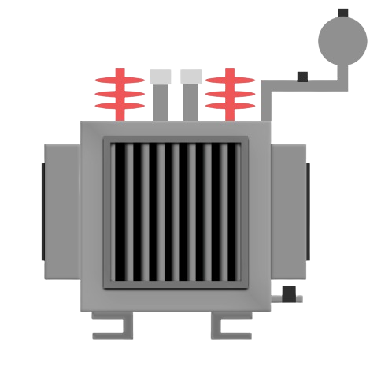
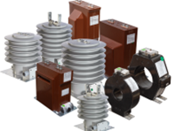
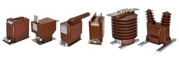

Instructions
Step 1:
The aim of this experiment is to get familiarized with the electrical devices.
Step 2:
Click on ‘Next’ Button to view the next electrical device.
Step 3:
Click on ‘Previous’ button to go back to previous electrical device.
Step 4:
Repeat Step 2 and 3 until you reach the end of the experiment.
Instructions
TO GET FAMILIARIZED WITH THE ELECTRICAL DEVICES.

Figure 1: Transformer
A transformer is a static electrical machine which transfer AC electrical power from one circuit to other circuit at a constant frequency, but the voltage level can be altered that means voltage can be increased or decreased according requirement. It is work on the principle of “Faraday’s law of Electromagnetic Induction” which states that “The induced e.m.f. is directly proportional to the rate of change of flux.”
A single phase voltage transformer basically consists of two electrical coil of wire, one called primary winding and another called secondary winding. For this we will define the primary side of the transformer as the side that usually takes power, and the secondary as the side that usually delivers power. In a single-phase voltage transformer the primary is usually the side with the higher voltage.
For a transformer there is no direct electrical connection between the two coil windings, thereby giving it the name also of an Isolation Transformer. Generally, the primary winding if a transformer is connected to the input voltage supply and converts or transforms the electrical power into a magnetic field. While the job of the secondary winding is to convert this alternating magnetic field into electrical power producing the required output voltage.
There are various types of Transformer:
Position of the winding concerning the core
Core type transformer
Shell type transformer
According to the transformer ratio or number of turns in the windings
Step up transformer
Step down transformer
Type of services
Power transformer
Distribution transformer
Instrument transformer
Current transformer
Potential transformer
Auto Transformer
On the basis of the supply
Single phase transformer
Three phase transformer
Instrument transformer:
Instrument transformer are used in AC system for measurement of electrical quantities i.e. voltage, current, power, energy, power factor, frequency.
Instrument transformers are also used with protective relays for protection of power system.
Basic function of instrument transformer is to step down the AC system voltage and current. The voltage and current level of power system is very high. It is very difficult and costly to design the measuring instruments for measurement of such high level voltage and current. Generally measuring instruments are designed for 1A/5A and 110V.
 
Figure 2: Current Transformer Figure 3: Potential Transformer